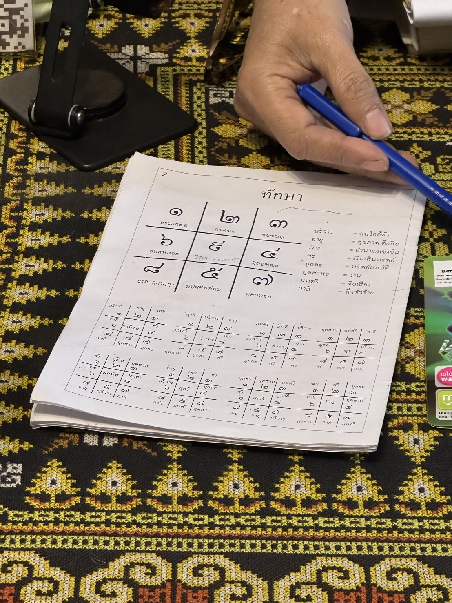

| 數字 | 泰文稱號 | 中文 | 特質摘要 |
|---|---|---|---|
| 1 | เจ้าแห่งเกียรติยศ | 榮譽之主 | 領導、地位、自尊心強、受人敬重 |
| 2 | เจ้าแห่งความอ่อนโยน | 溫柔之主 | 柔和、體貼、人緣、感受力強 |
| 3 | เจ้าแห่งนักรบ | 戰士之主 | 衝勁、行動力、好勝、易衝動 |
| 4 | เจ้าแห่งการวางแผน | 計劃之主 | 溝通、企劃、口才、思路靈活 |
| 5 | เจ้าแห่งปัญญา | 智慧之主 | 學識、判斷、長輩緣、正向思考 |
| 6 | เจ้าแห่งศิลปะ | 藝術之主 | 美感、品味、金錢流動、魅力 |
| 7 | เจ้าแห่งกสิกรรม | 農耕之主 | 堅忍、耐勞、直言如斧、進度偏慢多阻 |
| 8 | เจ้าแห่งความมัวเมา | 沉迷之主 | 熱情、投入、也易沉溺放縱 |
| 9 | เจ้าแห่งการหยั่งรู้ | 靈知之主 | 直覺、預感、神明庇佑、與命理有緣 |
| 0 | เจ้าแห่งความตาย | 死亡之主 | 停滯、封閉、離群，書中列為最凶之數 |
| 分類 | 成員 | 意義 |
|---|---|---|
| เลขคู่มิตร 吉配（摯友配） | 15/51・24/42・36/63 | 智慧配、慈悲人緣配、錢財愛情配。促進金錢、事業、人脈、貴人，益處遠多於害處 |
| เลขคู่สมพล 助力配 | 16/61・28/82・35/53・47/74 | 排除障礙、加持財源、得人疼愛、工作發展 |
| เลขคู่ธาตุ 五行配 | 17/71・25/52・38/83 | 同元素數字相配，促進該元素的穩定圓滿（注意 25/52 同時被列入仇敵配，以仇敵論） |
| เลขคู่ศัตรู 仇敵配（大凶） | 13/31・18/81・25/52・27/72 37/73・48/84・67/76・68/86 | 造成金錢、工作、感情、家庭、健康各方面的阻礙，書中明言應避開；含這些配對即非吉祥號 |
| 配對 | 名稱 | 評級 | 優點（ให้คุณ） | 缺點（ให้โทษ） |
|---|---|---|---|---|
| 24 / 42 | 慈愛人緣คู่เมตตา 吉祥組 | 大吉 +10 |
人見人愛、遇到的人帶來好運多於壞運、慈愛人緣旺、朋友相助、遇到的都是好朋友、個性甜美、被身邊人疼愛、樂觀、開朗、腦筋靈活會想會說、品味好愛美、工作強、收入源源不絕、能遇疼愛自己的好伴侶 | 無明顯缺點 |
| 45 / 54 | 全能貴人 | 大吉 +10 |
可信賴、講道理、多才多藝、熱愛知識、適應力好、帶來財運與事業運、有生意好運、能得大筆錢財、好學機智、口才好、有城府、後輩敬重、長輩支持、談學業易成、親近佛法、內心平靜 | 無明顯缺點 |
| 56 / 65 | 富貴圓滿 | 大吉 +10 |
能力強、懂理財規劃、意志堅定、穩健、樂善好施、慷慨、致力建立地位、解決問題強、長輩幫助、不怕窮、樣樣精通、聰明全面、錢財存得住、做什麼都容易成功、愛情如願、感情穩定 | 無明顯缺點 |
| 15 / 51 | 智慧貴人คู่ปัญญา 吉祥組 | 大吉 +9 |
長輩貴人相助、莫名得上司疼愛、會規劃工作、致力打好人生基礎、堅強、積極、品味好、懂賺懂花、聰明智慧高、感情運很好、工作步步高升、好運不斷 | 無明顯缺點 |
| 36 / 63 | 錢財愛情คู่เงินและความรัก 吉祥組 | 大吉 +9 |
外貌出眾又有財、追求利益與愛情的決心強、先苦後甘、能建立穩固家業、說話直率真誠、愛情甜蜜、積極熱情、勤奮賺錢有長輩後盾、心胸寬、生意能成不求人 | 無明顯缺點 |
| 55 | 長輩護持 | 大吉 +9 |
熱愛正義、獲身邊人相助、樂於教導、虔誠向善、樂觀、有條有理、沉穩周全、懂得感恩、說話有原則可信賴、獲長輩支持、常受年長者照顧 | 無明顯缺點 |
| 16 / 61 | 利益豐收คู่ให้ผลประโยชน์ 加持組 | 大吉 +8 |
專注於收益報酬、頂尖規劃者、有毅力、勤奮打造穩固根基、積極強健、與年齡有差距的對象感情深厚、用心經營家庭 | 想太多恐成感情阻礙、有時細膩過頭讓身邊人累 |
| 46 / 64 | 順風順水เลขคู่มิตร 吉祥組 | 大吉 +8 |
做事順暢無阻、溫柔甜美、品味好、時髦會打扮、讀心能力強、不太吃苦、身心舒暢、有地位基業、有藝術頭腦、有權勢、信用好、外柔內剛、賺錢能力強、錢財過手不斷、愛情清新 | 不夠謹慎、耳根子軟、可能花不少錢打扮自己 |
| 49 / 94 | 生財鬼才 | 大吉 +8 |
機智反應好、賺錢方式靈活多變、想法說法與眾不同、認真投入、生意買賣旺、頭腦精明、異鄉工作運佳、擅長科技產品 | 無明顯缺點 |
| 59 / 95 | 靈性智慧 | 大吉 +8 |
有智慧、想法特別但正向、長輩罩、求知若渴、預測神準、與命理占星有緣、有意外好運、神明庇佑、內心平靜、與外國外語異文化有緣、健康變好 | 無明顯缺點 |
| 14 / 41 | 機智好學 | 吉 +7 |
好學、機智、適應力強、有人相助、聰明伶俐、做事快、長輩提攜、有慈悲心、有意外之財 | 偶爾賣弄聰明、話太多、固執己見 |
| 44 | 策劃軍師 | 吉 +7 |
愛規劃、思考縝密、想法獨一無二、大家搶著向你問資訊、知道別人不知道的事、口才好、社交強、應變靈活、談判頂尖聰明、說出的話常對自己有利 | 小心文件契約出問題、健忘迷糊 |
| 99 | 通靈成就 | 吉 +7 |
獲得夢想不到的成功、有抱負、與宗教有緣、與國外外語異文化有緣、思想新潮、勇於嘗試、有神聖力量護佑 | 無明顯缺點 |
| 05 / 50 | 正直規劃 | 吉 +6 |
樂觀、言語公正、虔誠向善、生活有規劃、對社會有責任感、得長輩緣 | 工作偶有變數與阻礙、易過度沉迷於感興趣的事 |
| 22 | 談判外交 | 吉 +6 |
談判高手、思路開闊、善於思辨、記憶力好、擅長交朋友、東西輕鬆到手、服務業興旺、金錢周轉靈活、能看透人心 | 不會拒絕人、因客氣總是讓步、優柔寡斷不夠果決 |
| 66 | 萬人迷 | 吉 +6 |
人見人愛、有魅力、品味好、勤奮賺錢、致富不難、愛美、愛交際、因溫柔可愛被疼、愛情清新、有望成家結婚 | 太有魅力、異性緣過旺反傷感情、貪戀美色美物讓定力變差 |
| 19 / 91 | 名聲創意 | 吉 +5 |
有名聲、有創意、有抱負、樂善好施、愛上進、樂於助人、有威望、出眾有光彩、想出名用這組 | 性急、財運起伏不定、女性易與伴侶鬥嘴 |
| 26 / 62 | 言語生財 | 吉 +5 |
有魅力、溫暖、是可靠的商量對象、願意傾聽、因言語得財得愛、擅長社交、話語能開創未來、說話聰明、看得穿人的手腕、上進、適應力好 | 為愛花錢多、感情上心軟、錢來得快花得快、欠缺謹慎 |
| 09 / 90 | 靈感直覺 | 平 +4 |
第六感強、與宗教信仰有緣、常有意外好運、解決問題迅速 | 有他人進不去的私人世界、行為特立獨行被當怪咖、易被人抹黑 |
| 23 / 32 | 甜言商才 | 平 +4 |
勤勞、心胸寬、魅力吸引人、嘴甜、聰明智慧高、講道理、有過濾他人想法的特殊能力、有利經商 | 小心桃色糾紛、可能欠缺自制、恐因異性犯道德錯誤、時時保持正念可化解 |
| 29 / 92 | 敏捷創想 | 平 +4 |
做事迅速、敏捷、腦筋轉得快、想像力創造力豐富、心地善良、任何事都能商量、第六感強、喜歡旅行 | 猶豫、易被人牽著走、疑神疑鬼、外強內軟、想法恐與伴侶衝突 |
| 35 / 53 | 幕後靠山คู่ช่วยอยู่เบื้องหลัง 加持組 | 平 +4 |
堅強、勤勞、金錢周轉好、決策聰明、有俠氣、敢衝敢拚、獲他人合作、有權勢威望受人敬畏、統御力強、敢開創新事物 | 小心權力用錯地方、易與伴侶起摩擦、脾氣火爆、心狠果斷 |
| 69 / 96 | 財來財去 | 平 +4 |
金錢與愛情不斷流入、會賺錢、能成功、有運氣、有人愛、時髦、好學、上進、有威望 | 錢進得快但存不住、愛情送上門卻挑到最後一場空 |
| 04 / 40 | 談判智者 | 平 +3 |
求生智慧強、頭腦聰明、談判功力一流、講話犀利、直覺神準、常有創新點子 | 愛改變環境卻不改變自己、太容易相信人、越愛越信、愛背後議論他人 |
| 28 / 82 | 資金周轉คู่หมุนเงิน 加持組 | 平 +3 |
心胸寬、有權勢、敢投資、資金周轉能力強、敢試錯、上進、日後根基穩固 | 阻礙常來自利益糾葛、恐涉違法犯戒、情緒化、小心爛桃花與小三糾紛 |
| 39 / 93 | 意外成功 | 平 +3 |
有意想不到的成功、認真投入、成長進步快、增強買賣能量、愛鑽研、愛競爭且常獲勝、體能精力旺、跟得上科技、重視吉祥信仰 | 阻礙源於性急、情緒強烈易怒、要小心桃色糾紛 |
| 79 / 97 | 古物福緣 | 平 +3 |
與古老事物有緣、適合收藏古董聖物、受數字 9 的力量加持有好運 | 無明顯缺點 |
| 06 / 60 | 美感歡愉 | 平 +2 |
愛美有品味、開朗歡樂、擅長社交、有設計藝術天分 | 愛幻想、鋪張浪費、花錢無度恐生財務問題、桃花易招來錯的人、感情常失望、情緒難捉摸 |
| 47 / 74 | 群眾工作者คู่นักพัฒนางาน 加持組 | 平 +2 |
說話有威嚴、能說服他人跟隨、擅長與群眾工作、同伴給予合作、機智好、聰明犀利、勤奮賺錢 | 有時說話得罪人、與愛人聚少離多、勞累、扛的責任多、工作辛苦但回報不成正比 |
| 89 / 98 | 威望福報雙面 | 平 +2 |
識人精準、腦筋動得快、心胸寬、有權勢威望福報、與神聖事物有緣 | 事業易生亂、買賣不順、心浮氣躁、行事神秘、獨斷獨行、以自我為中心 |
| 17 / 71 | 商業奇才คู่ธาตุ 元素組・雙面 | 平 0 |
反應機智一流、適合經商、敢冒險、是築夢者、能靠實力衝向成功、想得大做得真 | 容易沉迷著魔、有離婚喪偶風險、想太多、焦慮、常感壓力、內心燥熱、工作順、錢流動但存不住 |
| 57 / 75 | 苦幹築基雙面 | 平 0 |
勤奮打基礎、敢啟動大案子、工作拚、有耐心等待成功、敢想敢做 | 與長輩相處憋屈甚至檯面上衝突、易有債務、官司糾紛、因想太多而生病 |
| 78 / 87 | 江湖義氣คู่นักเลง 雙面 | 平 0 |
有人相助、朋友眾多、講義氣、決策有理性、敢冒險而有領導地位 | 容易因朋友被帶偏、容易負債、為愛所苦、用情緒做決定 |
| 01 / 10 | 自由領袖 | 凶 -1 |
愛自由、有領導力、上進、時髦、不受擺佈、重視尊嚴、想法獨特、不隨波逐流 | 常遠離家鄉、易被騙、易被出賣、被扯後腿、做好事身邊人不領情、常遇突發事件、遭人嫉妒、被眼紅打壓 |
| 11 | 超級領袖 | 凶 -1 |
超級領導者、自信十足、上進渴望被認同 | 性急、自負、固執、情緒起伏大、說話衝、誰都不服、擺架子、對問題的耐受度低 |
| 34 / 43 | 敢言辯才雙面 | 凶 -1 |
敢說敢表現、辯才好、聰明、決策快、遇阻不退、有企圖心、說到做到 | 思想與行動易與人衝突、說話不看場合、言詞激烈、話中帶刺、不輕易讓人、易焦慮、思想鑽牛角尖、就算是對的也可能因言樹敵 |
| 38 / 83 | 豪膽投機คู่ธาตุ 元素組・雙面 | 凶 -1 |
敢衝敢賭、保持行動資金就湧入、謹慎的話能成功、心胸寬、重朋友義氣 | 脾氣火爆、敢賭也敢輸、財務波動大、投資愛冒險、想法與人衝突、小心三角戀、事業起得快落得快、小心權力用錯方向 |
| 03 / 30 | 勤奮糾察 | 凶 -2 |
勤勞、緊咬不放、抓錯精準、識人、反應快、身手敏捷、愛自由、敢衝敢賭、不愛受人管 | 性急火爆、魯莽、不怕危險、常與人衝突、小心親屬帶來的麻煩、身邊人常帶煩心事來、挑錯挑到身邊人累 |
| 33 | 戰將本色 | 凶 -2 |
愛交際、追求上進、工作勤奮、重朋友、自信強、敢正面迎戰、愛競爭、拚勁十足、認真投入 | 衝動暴躁、火氣大、性急不讓人、固執硬頸、誰都不怕不求人、嘴硬說話狠、言語粗魯狂妄、感情用錯對象反成阻礙、做事太快別人跟不上 |
| 77 | 重擔苦撐 | 凶 -2 |
能耐著性子劈開阻礙、勤奮意志強、責任感重 | 性急、感到壓迫、做大事相當累、感情與家人瑣事糾紛多、說話不留情面、嚴肅緊繃、對人生成敗焦慮不安 |
| 02 / 20 | 異鄉安撫 | 凶 -3 |
在異鄉遇貴人、喜歡旅行、口才能安撫人心 | 小心三角戀、感情糾紛不斷、多情不知足、拘謹憂慮、阻礙重重、人生易受挫、錢財易被侵占 |
| 12 / 21 | 外柔內剛 | 凶 -3 |
適應環境力強、情緒隱藏得好、思想自由度高 | 壓抑久了傷心理、時好時壞、對信任的人會情緒全面爆發、外柔內剛、與伴侶易衝突、書中提醒用這組要特別小心 |
| 58 / 85 | 權謀冒險 | 凶 -3 |
有手腕謀略、識破居心不良者、熱愛挑戰、模仿學習能力強 | 勤勞三分鐘熱度、自戀、自我感覺良好、愛冒險、欠缺周全、來得容易去得快、易負債、太會編故事最後變成說謊 |
| 08 / 80 | 豪賭俠氣 | 凶 -4 |
敢賭敢衝、天不怕地不怕、豪爽講義氣、為人海派、不醉不歸 | 常有煩心事、易被說閒話、身邊人帶來麻煩、財務拮据、成果易失敗、阻礙多、欠缺周全 |
| 07 / 70 | 苦行忍耐 | 凶 -6 |
耐操、能忍、吃重任務也扛、下定決心目標高 | 工作辛苦不順、阻礙卡關、痛苦憂鬱、志向高卻難如願、沉悶、壓力大、想太多、焦慮、常有突發驚嚇、行事神秘 |
| 25 / 52 | 父子衝突คู่พ่อลูกขัดแย้ง 仇敵組 | 大凶 -7 |
建立事業有耐性、有統御權力、有力量對抗阻礙、勤勞、有大格局、人生長跑漸入佳境 | 長幼之間易起衝突、財務不穩、工作辛勞、男性用恐與父親或兒子衝突、女性用恐強勢壓過伴侶或一味屈就 |
| 48 / 84 | 禍從口出คู่เสียเพราะปาก 仇敵組 | 大凶 -7 |
有手腕、有城府、聰明、敢冒險、能自保、唇槍舌戰很強 | 魯莽、容易起爭執、以自我為中心、阻礙多、易被騙、被欺瞞、被說閒話、麻煩纏身、文件契約常出問題、恐因自己說的話受損 |
| 68 / 86 | 沉迷破財คู่มัวเมา 仇敵組 | 大凶 -7 |
敢梭哈、敢冒險、有手腕有城府、魅力強、積極 | 欠缺周全、心太軟、容易被騙、會賺錢但敗在娛樂嗜好、感情易被沖昏頭、為慾望興趣花大錢、健康不佳 |
| 13 / 31 | 衝突開拓คู่ขัดแย้ง 仇敵組 | 大凶 -8 |
解決問題強、是敢挑戰的開拓者、不成功不放棄、說寫都有謀略 | 人生大起大落、想得快做得快別人跟不上、阻礙來自與人衝突、性急、衝動行事、情緒暴起暴落、用情緒做決定 |
| 18 / 81 | 業債之數คู่หนี้กรรม 仇敵組 | 大凶 -8 |
說話直、敢表達意見、心胸寬、真誠 | 行事神秘難懂、財務起落大易負債、與愛人分離、常處壓力之下、想做大事就遇阻礙、感情多問題、幫人反被嫌 |
| 27 / 72 | 離別病痛คู่พลัดพราก/หนี้สิน 仇敵組 | 大凶 -8 |
心胸寬、預測精準 | 常遇阻礙、突發病痛、常有離別、為愛所苦、想太多、長期負債、替人背債、常被借錢、與親近的人衝突、慢性病纏身 |
| 88 | 沉溺失速凶 | 大凶 -8 |
無明顯優點 | 流氓性格、衝動放縱、沉迷成癮、成功來得快、苦也來得急、是非不分、詭計多端、太過油條、輕信他人恐受重傷、愛誰就聽不進勸 |
| 37 / 73 | 官司意外คู่ทะเลาะวิวาท 仇敵組 | 大凶 -9 |
鬥志強、重尊嚴、外勤實地工作行 | 常遇阻礙、阻礙拖延、痛苦累積、消極厭世、感覺被逼迫、官司糾紛、寧折不彎、易生急禍、要忍受艱辛、壓力大、易出意外、健康出問題 |
| 67 / 76 | 全面阻礙คู่อุปสรรครอบด้าน 仇敵組 | 大凶 -9 |
無明顯優點 | 有苦、焦慮、每況愈下、分裂破碎、被背叛、家庭問題、屋漏偏逢連夜雨、愛情離散、情緒不穩、煩躁、想太多、家內矛盾、恐工作金錢愛情全失 |
| 00 | 孤寂之數เลขอันตราย | 大凶 -10 |
無明顯優點 | 孤僻封閉、活在自己的世界、鑽牛角尖、想法難以捉摸、孤單、感情不順、壓力大、做事出人意料、內心混亂 |
| 組合（書中寫法） | 分類 | 影響 | 扣分 |
|---|---|---|---|
| 670 / 607 / 067 等不分順序 |
仇敵組+0 大凶 | 工作、金錢、愛情恐全盤盡失 | -9 |
| 001 / 010 / 100 等不分順序 |
0 的危險組 | 工作不進步、上司不疼、被扯後腿、朋友背叛 | -8 |
| 002 / 020 / 200 等不分順序 |
0 的危險組 | 窮困、為錢所苦、常被借錢、招小三小王、感情不順 | -8 |
| 006 / 060 / 600 等不分順序 |
0 的危險組 | 招外遇地下情、感情失望、財務漏洞、花錢超支 | -8 |
| 007 / 070 / 700 等不分順序 |
0 的危險組 | 壓力、焦慮、有苦、重擔、阻礙一堆 | -8 |
| 008 / 080 / 800 等不分順序 |
0 的危險組 | 沉迷墮落於不良嗜好 | -8 |
| 130 / 103 / 013 等不分順序 |
仇敵組+0 大凶 | 思想言語都與人衝突 | -8 |
| 180 / 108 / 018 等不分順序 |
仇敵組+0 大凶 | 被暗箭所傷、被抹黑、與愛人分離 | -8 |
| 270 / 207 / 027 等不分順序 |
仇敵組+0 大凶 | 負債、財務卡關、替人背債、為愛所苦、離別 | -8 |
| 370 / 307 / 037 等不分順序 |
仇敵組+0 大凶 | 扛重擔、阻礙多、勞累錢少 | -8 |
| 480 / 408 / 048 / 840 等不分順序 |
仇敵組+0 大凶 | 官司糾紛上法院、說話不算話失信於人 | -8 |
| 112 / 121 / 211 等不分順序 |
情緒暴走組 | 情緒兩極、暴怒失控、傷感情也傷身心 | -8 |
| 680 / 608 / 068 等不分順序 |
仇敵組+0 大凶 | 錢財漏在鋪張浪費上 | -7 |
| 321 / 123 等不分順序 |
感情破裂組 | 感情易破裂、分手收場 | -7 |
| 003 / 030 / 300 等不分順序 |
0 的危險組 | 性急火爆、與人衝突、囉嗦愛唸、挑剔找碴 | -6 |
| 023 / 320 / 230 等不分順序 |
爛桃花組 | 爛桃花、感情糾葛多 | -6 |
| 340 / 304 / 034 等不分順序 |
言語滅前程組 | 說話直衝傷人、因言語樹敵 | -6 |
| 523 / 325 / 235 等不分順序 |
爛桃花組 | 桃花劫、因異性惹上大麻煩 | -6 |
| 004 / 040 / 400 等不分順序 |
0 的危險組 | 被議論是非、太輕信他人、愛管閒事 | -5 |
| 850 / 805 / 085 等不分順序 |
言語滅前程組 | 太會編故事、瞎掰、其實就是說謊 | -5 |
| 707 / 770 / 077 等不分順序 |
工作不順者常見 | 工作辛勞卡關、阻礙重重 | -5 |
| 184 / 148 / 814 等不分順序 |
工作不順者常見 | 工作屢屢受挫、不得志 | -5 |
| 005 / 050 / 500 等不分順序 |
0 的危險組 | 過度沉迷特定事物、鑽牛角尖 | -4 |
| 405 / 450 / 045 等不分順序 |
感情有問題者常見 | 感情易生波折 | -4 |
| 555 等不分順序 |
感情有問題者常見 | 感情糾紛多、常與伴侶起爭執 | -4 |
塔克夏是泰國傳統占星的八宮盤，與書的配對系統互相獨立、可疊加使用。3×3 盤面順時針固定排列 1→2→3→4→7→5→8→6（中央為世界）， 從你出生星期對應的數字起算「眷屬宮」，順時針輪轉八宮。同一個數字對不同星期出生的人吉凶完全不同。

| 宮位 | 泰文 | 意義（手稿右欄） | 工具計分 |
|---|---|---|---|
| 錢財 | ศรี | 金錢、資財、吉祥 | +2/碼 |
| 貴人 | มนตรี | 名聲、提攜、受敬重 | +2/碼 |
| 權勢 | เดช | 權力、競爭力 | +1/碼 |
| 資產 | มูละ | 財產、根基 | +1/碼 |
| 眷屬 | บริวาร | 身邊的人、部屬 | 0 |
| 健康 | อายุ | 健康好壞 | 0 |
| 勤勉 | อุตสาหะ | 工作、努力 | 0 |
| 凶星 | กาลี | 凶惡之事 | -3/碼 |
| 出生星期 | 數字1 | 數字2 | 數字3 | 數字4 | 數字5 | 數字6 | 數字7 | 數字8 |
|---|---|---|---|---|---|---|---|---|
| 週日 | 眷屬 | 健康 | 權勢 | 錢財 | 勤勉 | 凶星 | 資產 | 貴人 |
| 週一 | 凶星 | 眷屬 | 健康 | 權勢 | 資產 | 貴人 | 錢財 | 勤勉 |
| 週二 | 貴人 | 凶星 | 眷屬 | 健康 | 錢財 | 勤勉 | 權勢 | 資產 |
| 週三（日） | 勤勉 | 貴人 | 凶星 | 眷屬 | 權勢 | 資產 | 健康 | 錢財 |
| 週三（夜）羅睺 | 權勢 | 錢財 | 資產 | 勤勉 | 凶星 | 健康 | 貴人 | 眷屬 |
| 週四 | 錢財 | 資產 | 勤勉 | 貴人 | 眷屬 | 權勢 | 凶星 | 健康 |
| 週五 | 健康 | 權勢 | 錢財 | 資產 | 貴人 | 眷屬 | 勤勉 | 凶星 |
| 週六 | 資產 | 勤勉 | 貴人 | 凶星 | 健康 | 錢財 | 眷屬 | 權勢 |